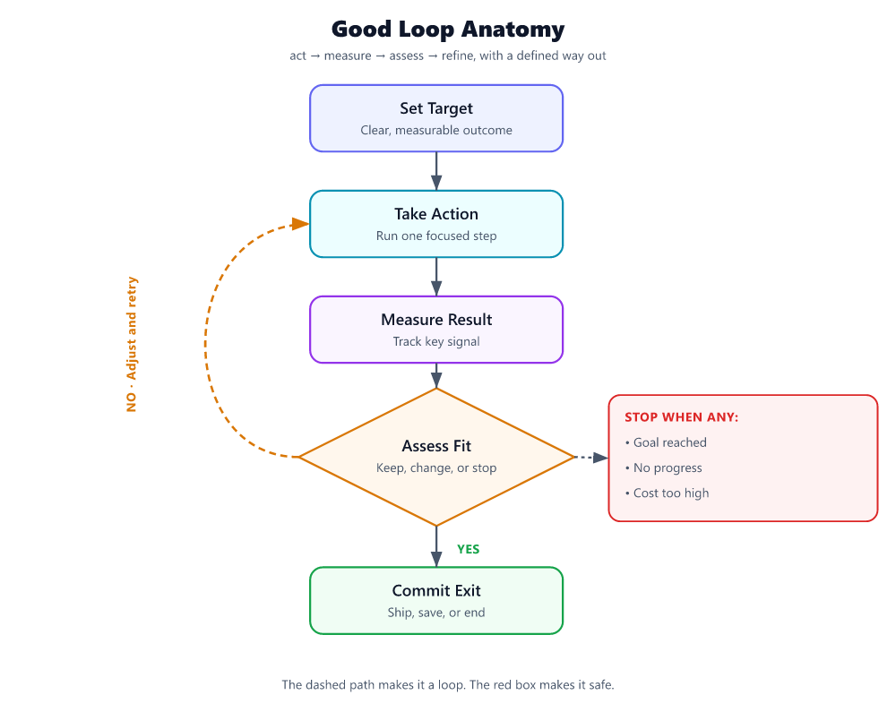

What Is a Loop in AI Agents, How Do You Create a Good One, and What Are the Best Practices?

If an agent only generates once, it is not running a loop. It is taking a single shot.
A loop is the repeated control cycle that lets an agent choose a step, take that step, inspect the result, and decide what to do next. In agent workflows, that pattern is often expressed as Thought → Action → Observation, repeated until the task is complete or the system stops [S4]. That structure matters because many agent tasks depend on tool results, intermediate decisions, and changing state rather than on the initial prompt alone [S1][S2].
A good loop is not “more reasoning.” It is bounded iteration with feedback.
What a loop is
At runtime, a loop usually does six things:
- Read the goal
- Select the next action
- Execute one bounded step
- Observe the result
- Update the working state
- Stop or continue [S4]
That is the difference between a responder and an agent. Agent systems are useful when they can combine planning, tool use, memory, and interaction across multiple steps instead of betting everything on the first output [S1][S2].
Why one-shot breaks down
One-shot generation works for direct questions. It breaks on tasks where the answer depends on what happens during execution.
Typical cases:
- The agent needs tool results before it can finish. Search, retrieval, APIs, and code execution produce information that does not exist in the prompt at the start [S1].
- The task has intermediate decisions. Multi-step work requires choosing what to do after each result, not only producing a polished final answer [S1][S2].
- The environment can change. In interactive settings, the next step depends on the latest observation, not on a fixed plan made upfront [S2][S4].
A simple example:
- One-shot: “Book the cheapest flight.”
- Loop:
- Ask for missing constraints
- Search flights
- Notice no acceptable option from the preferred airport
- Expand to nearby airports
- Re-rank results by total cost and timing
- Return the best options
The point is not extra chatter. The point is course correction.
How to create a good loop
A strong loop has four properties:
- a clear target
- a small, explicit state
- decision-ready observations
- hard stop rules
Everything else is secondary.
1) Define success before the first iteration
Do not start with “help me research” or “figure this out.”
Start with a completion rule.
Bad:
- “Help with research”
Good:
- “Return 3 vendors with pricing evidence, source links, and a recommendation”
- “Fix the failing test and show the diff”
- “Answer the policy question and cite the relevant section”
If “done” is vague, the loop wanders.
2) Keep loop state small and explicit
A loop should not drag an entire transcript around as its working memory. It should carry only what the next iteration needs.
Minimum state:
- goal
- success criteria
- current subtask
- facts confirmed so far
- open questions / blockers
- constraints
- iteration count
- retry count
- budget left
- status
Example:
goal: "Find 3 payroll software options for a 200-person manufacturer"
success_criteria:
- 3 relevant vendors
- pricing evidence for each
- recommendation with rationale
constraints:
- max_iterations: 8
- max_tool_calls: 12
- ask_user_if_required_input_missing: true
current_subtask: "find candidate vendors"
facts: []
blockers: []
iteration: 1
retries_for_current_step: 0
status: "running"
3) Make each iteration do one bounded thing
The fastest way to ruin a loop is to let one step plan, search, compare, verify, and conclude all at once.
Each iteration should answer three questions:
- What do I know now?
- What is the best next step?
- What result would count as progress?
Use a tight structure:
THINK: choose the next subtask
ACT: take one bounded action
OBSERVE: summarize what changed
DECIDE: continue, re-plan, ask the user, or stop
That keeps the loop debuggable and aligned with the Thought → Action → Observation pattern [S4].
4) Turn raw results into usable observations
A loop improves only when its observations are usable for the next decision.
Bad observation:
- “Search returned results”
Good observation:
- “Search returned 7 results; 4 are irrelevant, 2 are vendor pricing pages, 1 is a comparison article. We have pricing evidence for Vendor A and Vendor B, but still need a third qualified option.”
That kind of observation is useful because it tells the loop what changed and what remains.
5) Re-plan instead of blindly retrying
A loop should not keep repeating the same failed action unless something material changes.
Good rule set:
- Retry once for a likely transient failure
- Retry at most twice if you can change parameters
- Switch strategy after 2 failed attempts
- Ask the user if the blocker is missing input, missing credentials, or a decision only the user can make
- Stop if the action cannot succeed within policy, budget, or available tools
That is a practical default, not a law. But it is a much better starting point than unlimited retries.
6) Add hard stop conditions up front
A loop without stop conditions is not sophisticated. It is expensive.
Use multiple stop rules, not just “task complete.”
Default stop conditions
- Success reached
- Max iterations hit
Default: 6–8 iterations for a standard business task - Max retries for the same subtask hit
Default: 2 - No progress for 2 consecutive iterations
- Required user input is missing
- Budget or latency cap reached
- Risk or confidence threshold says escalate
What counts as “no progress”
Treat an iteration as no progress if none of these changed:
- no new fact was confirmed
- no blocker was removed
- no success criterion moved closer to completion
- no better next path was identified
If that happens twice in a row, the loop should re-plan, ask the user, or stop.
A minimal loop you can actually build
Here is a simple loop skeleton with sensible defaults.
state = {
"goal": "...",
"success_criteria": [...],
"facts": [],
"blockers": [],
"current_subtask": "...",
"iteration": 0,
"max_iterations": 8,
"same_step_retries": 0,
"max_same_step_retries": 2,
"no_progress_streak": 0,
"max_no_progress_streak": 2,
"status": "running"
}
while state["status"] == "running":
state["iteration"] += 1
if state["iteration"] > state["max_iterations"]:
state["status"] = "stopped_max_iterations"
break
next_action = choose_next_action(state)
result = execute(next_action)
observation = summarize_result(result)
progressed = evaluate_progress(observation, state["success_criteria"])
if progressed:
state["no_progress_streak"] = 0
state["same_step_retries"] = 0
update_state(state, observation)
else:
state["no_progress_streak"] += 1
if observation["needs_user_input"]:
state["status"] = "awaiting_user"
break
if observation["retryable"] and state["same_step_retries"] < state["max_same_step_retries"]:
state["same_step_retries"] += 1
adjust_parameters(state, observation)
continue
replan(state, observation)
if success_reached(state):
state["status"] = "completed"
break
if state["no_progress_streak"] >= state["max_no_progress_streak"]:
state["status"] = "stopped_no_progress"
break
That is enough for many useful agent workflows. Start there before adding hierarchy, critics, or multi-agent orchestration.
Bad loop vs. good loop
The easiest way to understand loop quality is to compare failure and control.
Bad loop
Task: “Find three payroll software options with pricing evidence.”
Iteration 1
- Search for payroll software
- Result: generic list article
Iteration 2
- Search for payroll software again
- Result: another generic list article
Iteration 3
- Search for best payroll software pricing
- Result: mixed blog posts
Iteration 4
- Guess three vendors and write a recommendation
Why this is bad:
- no explicit success criteria
- no definition of acceptable evidence
- repeated low-value search behavior
- no rule for replacing weak sources
- stops on a plausible answer, not a verified one
Good loop
Task: “Find three payroll software options for a 200-person manufacturer, include pricing evidence, and recommend one.”
Iteration 1
- Subtask: find qualified candidates
- Action: search for vendors relevant to mid-sized businesses and manufacturing needs
- Observation: 5 potential vendors; 3 look relevant enough to verify
- Decision: verify pricing evidence for those 3
Iteration 2
- Subtask: collect pricing evidence
- Action: visit official pricing pages or equivalent primary sources
- Observation: Vendor A has public pricing, Vendor B is quote-only, Vendor C has no pricing page
- Decision: keep A and B, replace C unless stronger evidence appears
Iteration 3
- Subtask: replace weak candidate
- Action: search for another relevant vendor with accessible pricing evidence
- Observation: Vendor D qualifies and has published pricing
- Decision: compare A, B, and D
Iteration 4
- Subtask: recommend
- Action: score against user criteria
- Observation: D fits best, A is cheaper, B lacks pricing transparency
- Decision: recommend D, note caveats, stop
Why this is good:
- success criteria were defined in advance
- every iteration had one purpose
- observations changed the next action
- weak evidence triggered replacement, not wishful thinking
- the loop stopped when the task was actually complete
Best practices for loop creation
Keep the control policy simple
Start with:
plan → act → observe → decide
Do not begin with a sprawling architecture. Agent systems vary in complexity, but complexity is a choice, not a requirement [S2]. A clean single loop beats a clever tangled one.
Use concrete actions
A loop should produce inspectable steps:
- one search query
- one API call
- one retrieval step
- one code patch
- one clarification question
- one scoring pass
Concrete actions are easier to verify, log, and debug.
Define acceptable evidence
Many loops fail because they never define what counts as a valid result.
Examples:
- for research: official docs, vendor pricing pages, named primary sources
- for coding: passing tests, changed files, expected output
- for support: cited policy section, account status, approved action
If evidence quality matters, encode it in the loop state.
Prefer structured observations over free-form summaries
Use fields like:
{
"action": "verify_pricing",
"result": "partial_success",
"facts_learned": [
"Vendor A has public pricing",
"Vendor B requires quote"
],
"blockers": [
"Vendor C has no accessible pricing page"
],
"progress_made": true,
"needs_user_input": false,
"retryable": false,
"recommended_next_action": "replace_vendor_c"
}
Structured handoffs reduce ambiguity and make the next decision easier.
Separate doing from judging
Do not let the same step both perform work and declare victory without a check.
Use this pattern:
- execute
- observe
- evaluate against success criteria
- accept, repair, or re-plan
That discipline matters more than long reasoning.
Compress context aggressively
Keep:
- confirmed facts
- decisions made
- unresolved blockers
- artifacts that matter
Drop:
- repeated internal deliberation
- stale branches
- old raw outputs once summarized
Long transcripts are not a sign of quality. They are often a sign that the loop is losing control.
Ask the user at the right time
Do not ask the user too early. Do not wait too long either.
Ask when:
- a required input is missing
- multiple valid paths depend on user preference
- credentials or permissions are required
- the loop hits a policy or risk boundary
- evidence is conflicting and the choice is consequential
Default rule: if the blocker cannot be resolved with one more bounded action, ask the user instead of guessing.
Log every iteration
At minimum, log:
- iteration number
- current subtask
- action taken
- result status: success / partial / fail
- facts gained
- blockers found
- retry count
- no-progress streak
- latency / tool cost
- stop reason
If you cannot explain why the loop stopped, you do not control the loop.
A practical stop-condition checklist
Use this checklist before shipping any agent loop.
The loop should stop when:
- every success criterion is met
- the answer includes the required evidence
- max iterations is reached
- max retries for the same step is reached
- two consecutive iterations make no progress
- required user input is missing
- cost or latency cap is exceeded
- the task crosses a risk or approval boundary
Recommended defaults
- Max iterations: 6–8
- Max retries for the same step: 2
- No-progress threshold: 2 consecutive iterations
- Ask-the-user threshold: after one failed attempt if the blocker is missing input or authorization
- Verification requirement: mandatory before final output for high-impact tasks
These defaults are conservative on purpose. You can always loosen them after you see real traces.
Common loop mistakes
1) Infinite retries
If the same step keeps failing, the loop should change something meaningful or stop.
2) Giant planning before any observation
If the task depends on tools, get evidence early. Thought → Action → Observation works because it interleaves reasoning with real feedback [S4].
3) No success criteria
Without a definition of done, the loop either stops too soon or never stops cleanly.
4) Treating activity as progress
More steps do not mean a better loop. A good loop reduces uncertainty or moves the task closer to done.
5) Carrying the whole transcript forever
That is not memory. That is context bloat.
6) Ending on an unverified claim
Do not stop on “this should work” when you can check.
The build recipe
If you need a practical recipe, use this one:
- Write the goal in one sentence
- List 2–4 concrete success criteria
- Define what counts as acceptable evidence
- Create a small state object
- Limit each iteration to one bounded action
- Summarize results into structured observations
- Retry once, retry twice only with changed parameters
- Re-plan after repeated failure
- Ask the user when the blocker is missing input or authority
- Stop on success, no progress, or budget
That is how you create a loop that is useful in practice, not just elegant on a whiteboard.
The takeaway
A loop in an AI agent is the repeated cycle that lets the system act, inspect, and adjust rather than answer once and hope for the best. The standard pattern is Thought → Action → Observation, repeated until a clear stop condition is met [S4]. That structure is what makes agents effective on tasks that require tools, intermediate decisions, and interaction with changing state [S1][S2].
The best loops are not elaborate. They are disciplined.
They have:
- a sharp goal
- explicit success criteria
- small state
- one bounded action per iteration
- decision-ready observations
- hard stop rules
If you remember one rule, make it this:
A good loop does not keep going because it can. It keeps going only while each step earns the next one.
Sources
- [S1] AI Agent Systems: Architectures, Applications, and Evaluation - arXiv
- [S2] Agentic Artificial Intelligence (AI): Architectures, Taxonomies, and Evaluation of Large Language Model Agents
- [S3] Show HN: Orcbot – an open-source autonomous agent framework
- [S4] Understanding AI Agents through the Thought-Action-Observation Cycle
- [S5] A Survey of Self-Evolving Agents What, When, How, and Where to ...
- [S6] GitHub - VoltAgent/awesome-ai-agent-papers: A curated collection of AI agent research papers released in 2026, covering agent engineering, memory, evaluation, workflows, and autonomous systems. · GitHub
- [S7] Auditing Trajectory-Level Hallucinations in Multi-Agent Industrial ...
- [S8] What Breaks When LLMs Code? Characterizing Operational Safety Failures of Agentic Code Assistants
- [S9] Beyond Accuracy: A Multi-Dimensional Framework for Evaluating Enterprise Agentic AI Systems
- [S10] A Comprehensive Review of AI Agents: Transforming Possibilities in Technology and Beyond
- [S11] luo-junyu/Awesome-Agent-Papers - GitHub
- [S12] Diffusion LLM may make most of the AI engineering stack obsolete
Generated by PulseAI — content self-refined over 2 round(s) to 88/100 (onTopic 93, grounding 74). Flowchart: model-authored labels + deterministic SVG layout. Source research scored 78.